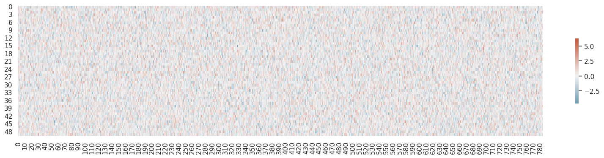

n,m = x_train.shape
c = y_train.max()+1
n,m,c(50000, 784, tensor(10))tensor([[ 0.00, 11.87, 0.00, ..., 5.48, 2.14, 15.30],
[ 5.38, 10.21, 0.00, ..., 0.88, 0.08, 20.23],
[ 3.31, 0.12, 3.10, ..., 16.89, 0.00, 24.74],
...,
[ 4.01, 10.35, 0.00, ..., 0.23, 0.00, 18.28],
[10.62, 0.00, 10.72, ..., 0.00, 0.00, 18.23],
[ 2.84, 0.00, 1.43, ..., 0.00, 5.75, 2.12]])(Of course, mse is not a suitable loss function for multi-class classification; we’ll use a better loss function soon. We’ll use mse for now to keep things simple.)
We need to get rid of that trailing (,1), in order to use mse.
torch.Size([50000, 1])\(y = 3x^2 + 9 \rightarrow u = x^2, y = 3u + 9\)
\(\dfrac{dy}{dx} = \dfrac{dy}{du} \times \dfrac{du}{dx}\)
\(\dfrac{d(3x^2 + 9)}{dx} = \dfrac{d(3u + 9)}{du} \times \dfrac{d(x^2)}{dx}\)
\(\dfrac{d(3x^2 + 9)}{dx} = 3 + 0 \times 2x\)
\(\dfrac{dy}{dx} = 6x\)
Loss(L_2_, y)
L_2_(relu)
relu(L_1_)
L_1_(X, W)
import seaborn as sns
import matplotlib.pyplot as plt
sns.set_theme(style="white")
# Set up the matplotlib figure
f, ax = plt.subplots(figsize=(20, 4))
cmap = sns.diverging_palette(230, 20, as_cmap=True)
sns.heatmap(w1.T, cmap=cmap, vmax=6.3, center=0,
square=False, linewidths=0, cbar_kws={"shrink": .5})
We cheat a little bit and use PyTorch autograd to check our results.
tensor([-19.60, -2.40, -0.12, 1.99, 12.78, -15.32, -18.45, 0.35, 3.75, 14.67, 10.81, 12.20, -2.95, -28.33,
0.76, 69.15, -21.86, 49.78, -7.08, 1.45, 25.20, 11.27, -18.15, -13.13, -17.69, -10.42, -0.13, -18.89,
-34.81, -0.84, 40.89, 4.45, 62.35, 31.70, 55.15, 45.13, 3.25, 12.75, 12.45, -1.41, 4.55, -6.02,
-62.51, -1.89, -1.41, 7.00, 0.49, 18.72, -4.84, -6.52])